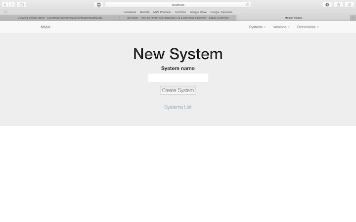
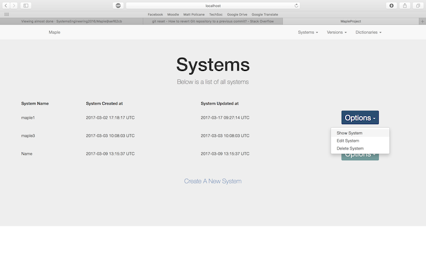

Second Iteration
After gathering feedback from our client regarding our first iteration, we made the changes he requsted as well as continuing to add more functionality according to our requirements list. Once our second iteration was complete, we had fulfilled the following requirements:
- RQ1: The application must be a data dictionary editor
- RQ2: The application must be able to create a data dictionary (logical and physical) for the required system e.g. for a customer system or for a payroll system
- RQ4: The application should ensure that the data dictionaries can handle the versioning of systems
- RQ11: The application must have a screen for loading data dictionaries
- RQ13: The application must have a screen for loading data
- RQ15: The application must accept systems and data dictionaries as its data (content for the application)
- RQ16: The application must define a data model for our data dictionary
- RQ17: The data dictionary should have have the ability to be augmented (can grow in size)

Our home page was mostly unchanged from the first iteration of our application.

We now removed the version number from the "add new system" functionality as this is a seperate process, using the newly created "versions" table.

A dropdown menu that has a number of options such as show system, edit system and delete system.
We were able to show a list of all of the systems within the systems table which was done using a search of the table.
We added the abiliy to add a new table for a specified system. This would use our new table within our database to store this information, linking the systems table with systemID as a foreign key.

We could then display all versions for a particular system.
Client Feedback
Once we were satisfied with our second iteration, we had another meeting with our client in order to get his feedback and note any changes he would like. The results of the meeting were the following:
- Remove "created at" and "updated at" attributes in systems and versions lists as the client felt these pieces of information were redundant
- A simple '+' icon should be used as an option to add a new system
- In the list of systems, the name of the system should link to its version page rather than having a seperate button as the client feels this is more intuative
- Use icons for 'edit' and 'delete' buttons as words are not necessary
- Add a true/false marker which can indicate which versions are active and which ones are not
- Enable users to edit individual fields on a displayed data dictionary
Along with these requests, the client recomended that we no longer focus on parsing a CSV file and instead focus on manual entry by the user. We took all of these comments on board and started development of our third iteration